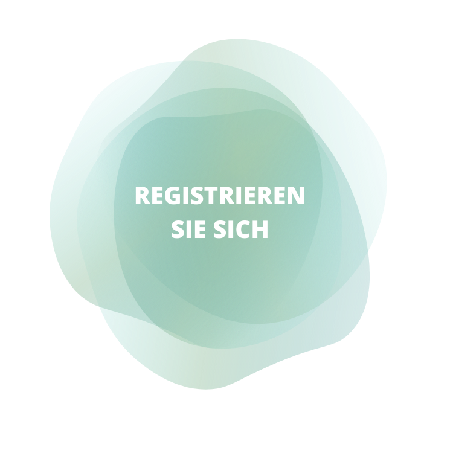

it's not just a Diary
It's Mywomo
Ein Wiki ist eine Website, deren Inhalte von den Besuchern nicht nur gelesen, sondern auch direkt im Webbrowser bearbeitet und geändert werden können. Das Ziel ist häufig, Erfahrung und Wissen gemeinschaftlich zu sammeln und in für die Zielgruppe verständlicher Form zu dokumentieren. Ein Wiki ist eine Website, deren Inhalte von den Besuchern nicht nur gelesen, sondern auch direkt im Webbrowser bearbeitet und geändert werden können. Das Ziel ist häufig, Erfahrung und Wissen gemeinschaftlich zu sammeln und in für die Zielgruppe verständlicher Form zu dokumentieren. Learn More
